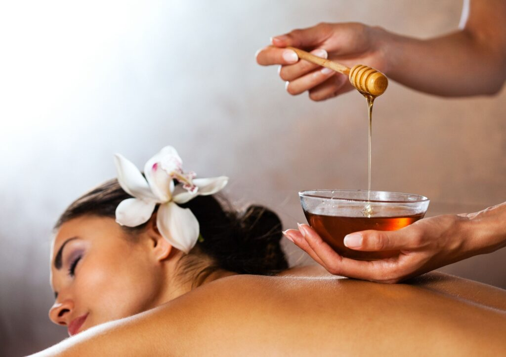
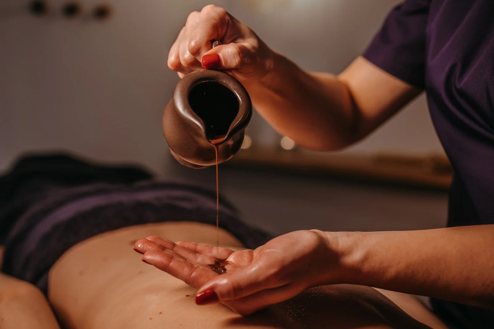
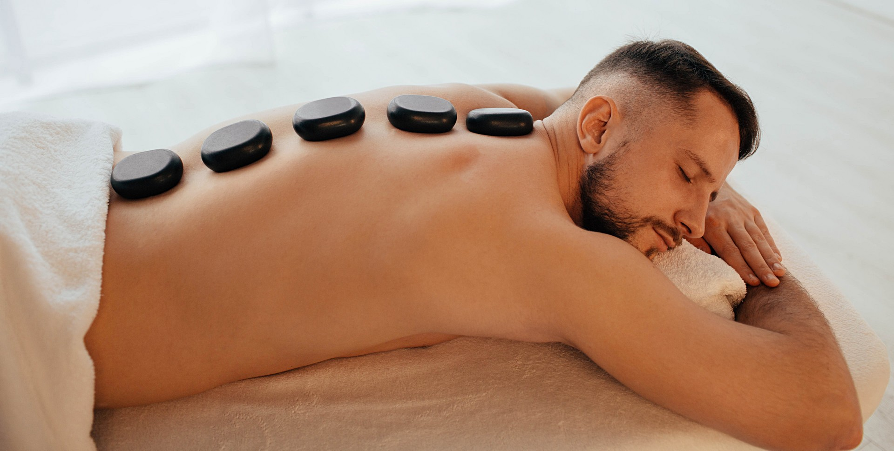

<div class="bodyContainer">
  <div class="container">
    <div id="classicMassageContainer" class="massageContainer">
      <h1>Masaż klasyczny</h1>
      
      <p>
        Masaż klasyczny to najpopularniejszy masaż, który w zależności od formy –
        intensywności może być traktowany jako leczniczy, relaksacyjny,
        pobudzający. Masaż klasyczny ma na celu poprawienie psychofizycznego stanu
        pacjenta. Może być wykonywany jako zabieg całościowy lub częściowy. Sam
        masaż działa przeciwbólowo, polepsza odżywianie tkanek, poprawia wygląd
        skóry, która jest lepiej dotleniona i ukrwiona, regeneruje mięśnie,
        zwiększa elastyczność i sprężystość stawów i aparatu więzadłowego,
        przyspiesza przemianę materii, uaktywnia przepływ krwi i limfy. Już jeden,
        poprawnie wykonany zabieg polepsza samopoczucie, odczuwamy mniejsze
        napięcie w okolicach grzbietu, karku…
      </p>
      <div class="info">
        <p>Cena: 120zł</p>
        <p>Czas trwania: 1h</p>
      </div>
    </div>

    <div id="honeyMassageContainer" class="massageContainer">
      <h1>Zabieg + masaż miodem</h1>
      
      <p>
        Zabieg + masaż miodowy to intensywny zabieg o działaniu antycellulitowym,
        ujędrniającym i odżywczym. Wspomaga proces wyszczuplania sylwetki
        rozbijając tkankę tłuszczową, poprawia sprawność układu krążenia, działa
        regenerująco i odżywczo na skórę, przyczynia się do udrożnienia systemu
        limfatycznego oraz stymuluje wydzielanie gruczołów potowych. W czasie
        zabiegu przez skórę usuwane są szkodliwe substancje – złogi, kwasy
        organiczne, sole, toksyny – które są przyczyną wielu schorzeń i bólów…
      </p>
      <div class="info">
        <p>Cena: 200zł</p>
        <p>Czas trwania: 45minut</p>
      </div>
    </div>

    <div id="chocolateMassageContainer" class="massageContainer">
      <h1>Zabieg + masaż czekoladą</h1>
      
      <p>
        Zabieg + masaż czekoladowy dostarcza substancji pobudzających wydzielanie
        endorfin, które wywołują uczucie szczęścia i zadowolenia, jak również
        poprawia wygląd skóry, wspomaga witalność, rewitalizuje, zapobiega
        procesom starzenia, działa wyszczuplająco i diuretycznie…
      </p>
      <div class="info">
        <p>Cena: 200zł</p>
        <p>Czas trwania: 1h</p>
      </div>
    </div>


    <div id="hotStonesMassageContainer" class="massageContainer">
      <h1>Masaż gorącymi kamieniami</h1>
      
      <p>
        Masa gorącymi kamieniami łączy w sobie zalety masażu ze szczególnymi
        właściwościami wulkanicznych kamieni bazaltowych. Przywraca harmonię ciała
        i umysłu, powoduje przypływ pozytywnej energii. Jest zabiegiem silnie
        relaksującym, pomaga osiągnąć uczucie spokoju i odprężenia, redukuje
        stres, zmęczenie, zmniejsza napięcia mięśniowe, korzystnie wpływa na układ
        krwionośny, przyspiesza metabolizm, przyczynia się do poprawy
        psychofizycznej sprawności organizmu…
      </p>
      <div class="info">
        <p>Cena: 120zł</p>
        <p>Czas trwania: 45minut</p>
      </div>
    </div>
</div>
</div>

